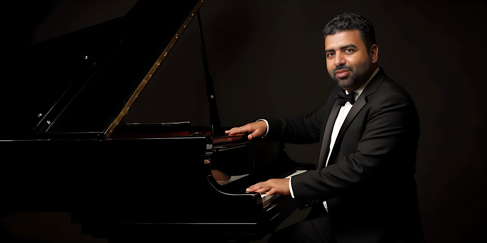
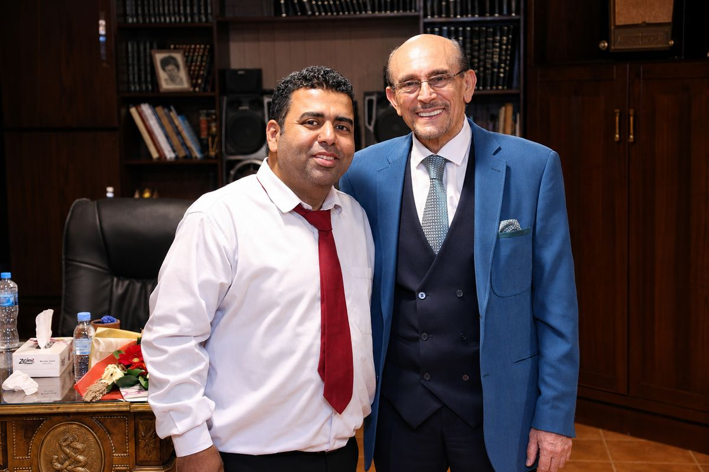
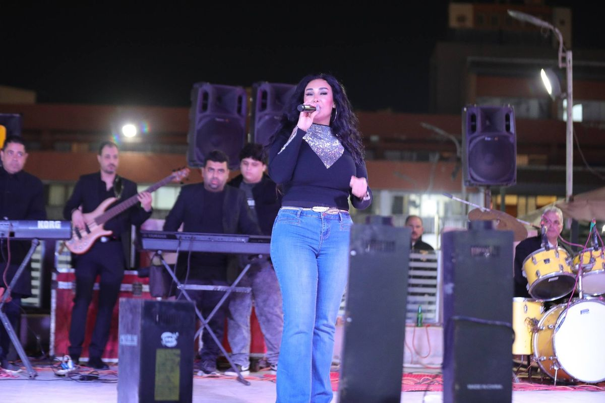
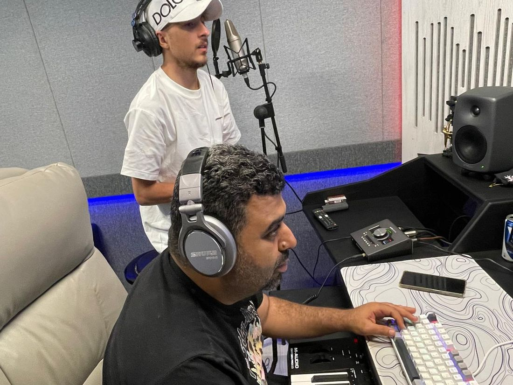

أغنية
الكيادين
مع محمد البدر
كلمات وألحان وتوزيع جورج مكرم.
George Makram
موسيقى فيلم من بطولة محمد صبحي، ومهرجان وصل لحوالي 4 مليون مشاهدة، وترانيم بتوصل للقلب. كله من أستوديو بيانيست.






أربع أعمال تبدأ منها.
مع محمد البدر
كلمات وألحان وتوزيع جورج مكرم.
متاح على يوتيوب وسبوتيفاي وأنغامي وباقي المنصات.
عمل ديني من أعمال جورج مكرم.
إعادة توزيع موسيقى فيلم يسوع بتقنيات توزيع حديثة وبدون تدخل الذكاء الاصطناعي.
أفلام وأغاني وتعاونات، كل عمل ليه لينك تشوفه أو تسمعه.
الموسيقى التصويرية لفيلم الفنان الكبير محمد صبحي.
الموسيقى التصويرية للفيلم الروائي المصري.
موسيقى الأوبريت والمكساج: الموزع جورج مكرم، على مسرح المركز الكاثوليكي للسينما.
عزف معها في حفلات لايف في أكثر من مناسبة.
من أشهر مقطوعاتي، وفيها الكمان والبيانو في جو سينمائي هادي. دي لقطة منها، والمقطوعة كاملة على منصاتي.
اسمعها على المنصاتاسحب يمين وشمال، واضغط على أي صورة تكبّرها.

وُلد الفنان جورج مكرم في محافظة بني سويف عام 1988. لم يدرس الموسيقى دراسة أكاديمية، لكنه أحبها منذ صغره، وتعلّمها بأذنه وشغفه من أعمال الموسيقار عمر خيرت.
تأثر جورج بعمر خيرت وبحفلاته التي كانت تُذاع على التلفزيون المصري. وذات يوم أهداه أخوه الأكبر مينا شريطًا اسمه «لقاء آخر» لعمر خيرت، ومن هذا الشريط بدأ يتعلم الموسيقى.
صارت عادته أن يشتري شريط عمر خيرت كل سنة، منها «العرافة» و«العطور الساحرة» و«عم أحمد»، ثم جمع كل شرائطه، وسجّل حفلاته من التلفزيون المصري على شرائط الفيديو.
اندمج في الموسيقى الكنسية، وقاد كورال ابتدائي كنيسة ماري مرقس ببني سويف. وشجعه الأستاذ جوزيف فايز قائد فريق «3 قديسين»، واكتشفه في الموسيقى الكنسية.
كان والده يعمل في الشرطة المصرية ووالدته مديرة مدرسة، ورغم ذلك اتجه إلى الفن. درس في كلية التربية قسم الفلسفة بجامعة القاهرة، ثم انتقل إلى جامعة بني سويف، وتخرج عام 2009. وتأثر بالدكتور مصطفى النشار وعدد من أساتذة علم الاجتماع.
انطلق في مجال الموسيقى، وعزف في فندق سافوي بشرم الشيخ وكمبينسكي بالقاهرة، وأنشأ أول أستوديو صغير في بيته.
تعاون مع الفنان الكبير محمد صبحي، وتعامل معه كثيرًا وتبادلا الحديث في مدينة سنبل، وتركت هذه التجربة أثرًا كبيرًا في شخصيته. وفتح له هذا الباب للعمل مع الفنانة شاهيناز والحاجة نبيلة، بحكم تأثره بالموسيقى الشعبية المصرية الكلاسيكية.
ثم تعاون مع الفنان المصري أبو الليف، والفنان الخليجي محمد البدر، وفريق «نغم مصر» للفنان رفعت محمد، وكثير من الفنانين والفنانات.
تأثر بعمر خيرت وبول موريا (Paul Mauriat) وريتشارد كلايدرمان (Richard Clayderman)، وبكثير من فناني المدرسة الموسيقية المعاصرة. وفي الغناء تأثر بمدرسة «بي جيز» (Bee Gees) الإخوة جيب، وبفرقة «سيكريت جاردن» (Secret Garden)، وبكثير من الفنانين الغربيين والشرقيين.
يحب السينما ودرسها، وصنع كثيرًا من فيديوهات المونتاج بالذكاء الاصطناعي ومن اللقطات الحية.
له مقطوعات مشهورة في السوق مثل «احتواء» و«Dreams & Darkness» وغيرها. ولا يزال يدرس ويتعاون فنيًا، وأمله أن يقدم موسيقى تصويرية رائعة في الفترة القادمة.
من عشق جورج مكرم لابنته جودي، ومن بعد المسافة بينهما في فترة من الفترات، ألّف لها مقطوعة بتعبّر عن اشتياقه لها.
هي رسالة أب لابنته، قالها بالبيانو.
اسمع مقطوعة جودي
كل الأعمال مقسمة حسب النوع. اختار اللي يهمك واسمعه على يوتيوب.
بتقنيات توزيع حديثة وبدون تدخل الذكاء الاصطناعي.
ترنيمة.
إعادة إحياء موسيقي للحن.
ترنيمة بفكرة جديدة، وتعزية لكل من فقد عزيزاً.
المركز الثاني مناصفة في مسابقة «أنا المصري» بوزارة الثقافة. ألحان وتوزيع جورج مكرم.
أغنية وطنية.
من كلمات وألحان بليغ حمدي، توزيع جورج مكرم، بصوت نرمين أحمد «نيرما».
كليب بكلمات الأغنية على الشاشة، وفيه عبارة «Powered by Studio Pianist - Mr. George Makram».
أغنية رومانسية.
أغنية اليوم الوطني السعودي 2025.
أغنية خليجية.
أغنية خليجية.
The Birth of Light. موسيقى مسيحية، تأليف جورج مكرم.
مقطوعة ديسكو من تأليف جورج مكرم.
مقطوعة موسيقية للبيانو والكمان، تأليف جورج مكرم.
مقطوعة موسيقية من تأليف جورج مكرم.
مقطع من التعاون.
قيادة موسيقية للفرقة.

لقاء تلفزيوني.
لقاء تلفزيوني.
لقاء تلفزيوني.
من أكتر الأسماء اللي أثّرت فيا الموسيقار المصري عمر خيرت، والموسيقار الفرنسي بول موريات (Paul Mauriat). بسمع موسيقاهم وبعزفها، وده بعض اللي عزفته.
عزف جورج مكرم، من موسيقى Paul Mauriat.
عزف جورج مكرم، من موسيقى عمر خيرت.
عزف جورج مكرم، من موسيقى عمر خيرت (مقطع قصير).
عزف جورج مكرم، من موسيقى عمر خيرت.
عزف جورج مكرم، من موسيقى عمر خيرت.
اشتغل جورج مكرم مع فنانين من مصر والسعودية، وبيحضّر لتعاونات جديدة مع أسماء كبيرة.
المؤلف والملحن المصري السعودي.
الفنان السعودي.
عزف معها في حفلات لايف في أكثر من مناسبة.
اشتغل معها في حفلة.
وزّع له أغاني وعزف معه لايف.
يحضّر لتعاون معه.
الشاعر محسن الشبراوي، والمطرب محمود فايد، وفرق ترنيم معروفة.
من الحفلات والمسارح والأستوديو واللقاءات.
قولي فكرتك وأنا أحدد معاك المطلوب والمدة والسعر.
أغاني عاطفية ووطنية وترانيم، بتوزيع يطلع الأغنية بأحسن شكل.
ألحان جديدة لكلماتك أو لعملك الفني.
للأفلام والمسرح والأعمال الدرامية.
تسجيل في الأستوديو ومعالجة الصوت لحد النسخة النهائية.
تصوير ومونتاج وإخراج كليبات، وتقنيات الذكاء الاصطناعي في الأعمال الحديثة.
تسجيل عزف لأغنيتك، وقيادة موسيقية في الحفلات.
اضغط على أيقونة المنصة وهتفتح بروفايلي هناك.
ابعتلي فكرتك أو الأغنية اللي عايز تشتغل عليها، وهرد عليك بالتفاصيل.